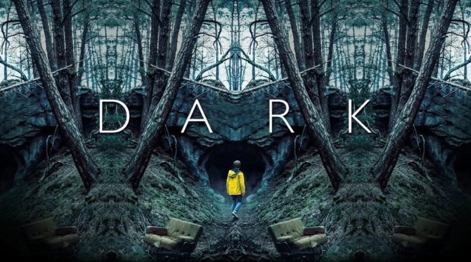
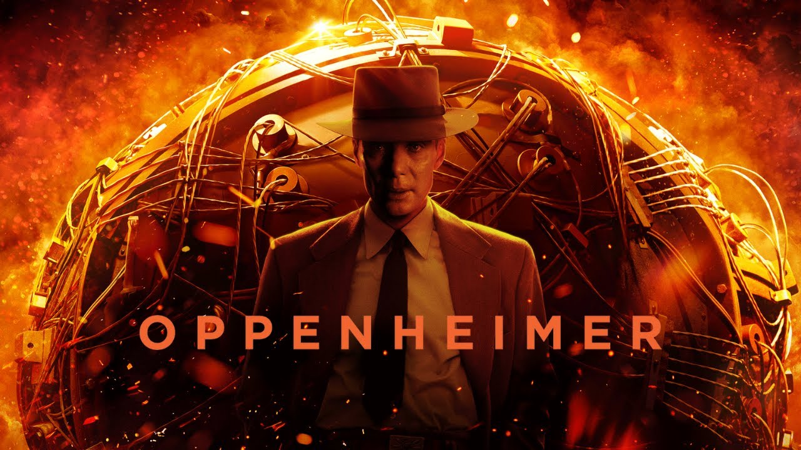
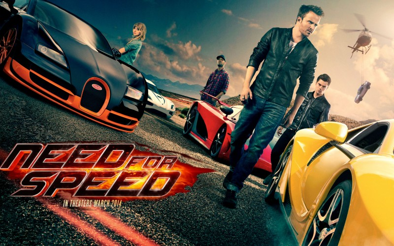

Dark 😶🌫️

A série dark se passa na cidade fictícia de Winden, na Alemanha, que sofre o impacto do desaparecimento de uma criança, que expõe os segredos e as conexões ocultas entre quatro famílias locais, enquanto elas lentamente desvendam uma sinistra conspiração de viagem no tempo que abrange várias gerações.
Oppenheimmer ☢️

O filme narra a jornada de Oppenheimer ao lado de um grupo de colegas cientistas enquanto eles navegam no árduo processo de desenvolvimento da devastadora arma nuclear que levou aos eventos catastróficos em Hiroshima e Nagasaki, no Japão, em 1945. Sabem o que é bizarro? Inicialmente, Oppenheimer aceitou participar do projeto por achar que era o certo, que se os Estados Unidos tivessem uma bomba nuclear, realmente as guerras iriam parar. Contudo, cada dia era uma desculpa nova para terem essas bombas. Manter a paz. Poder brigar contra os nazistas. Poder brigar contra os comunistas. O físico foi ficando é maluco com o tempo!
Need for Speed 🏎️

Tobey Marshall, um exímio piloto, herda do pai uma oficina mecânica, onde trabalha com carros modificados. Um dia, um ex-piloto de Fórmula Indy o procura para concluir um Ford Mustang desenvolvido por um gênio da mecânica. Mesmo após a venda do carro, a rivalidade entre eles faz com que disputem uma última corrida, mas ela acaba com o falecimento de Pete, um amigo de Tobey. Considerado culpado pela morte, Tobey passa dois anos na prisão. Quando sai da cadeia, ele decide se vingar.